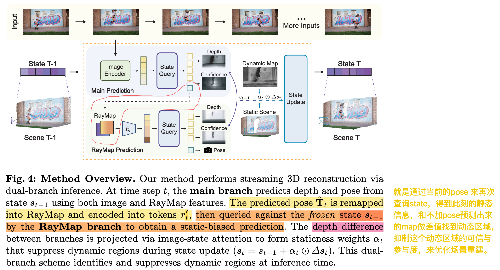
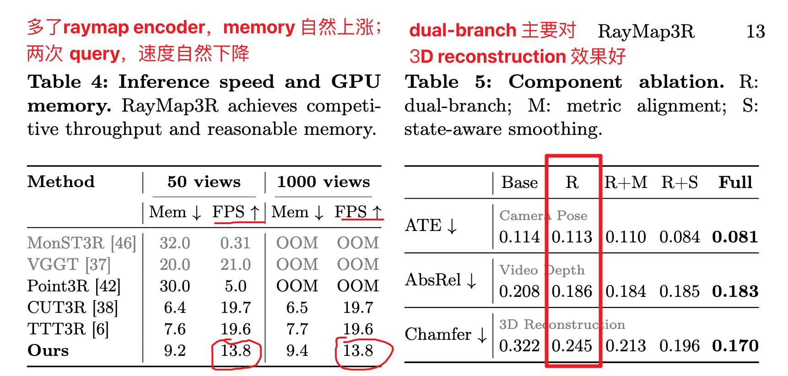
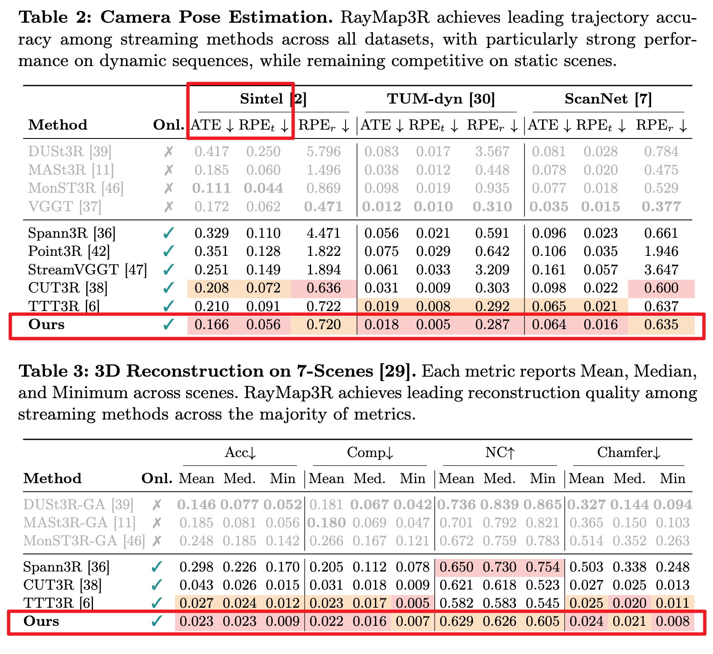

Method
Dual-Branch Inference
==核心观察：== 如果只给 RayMap，不给图像特征，模型往往不会重建当前帧里的动态前景，而更倾向于从 state 中恢复稳定的静态背景。
在 CUT3R streaming feed-forward reconstruction 的 inference 过程中，利用 RayMap-only prediction 的 static-scene bias 判断哪些区域是动态物体，然后抑制这些区域对 persistent state / memory 的污染。
就相当于用 raymap static-scene bias 做 dynamic segmentation。

RayMap3R 在 warmup 之后，每帧 inference 前向包含两次 state query：一次 main query，一次 RayMap-only query。第二次 query 是辅助的 static-biased branch，用来估计 dynamic/static mask；最终 state 只更新一次，并且更新被 staticness weights 调制。每帧要做两次 decoder-style rollout/readout，但只有 main branch 的 candidate state update 被最终用于更新；RayMap-only branch 的 state output 应该被丢弃，只保留它的 depth prediction 用于 dynamic/static discrepancy。inference 的简要流程：
state_prev = state_feat
new_state_main, dec_main = recurrent_rollout(state_prev, image_plus_raymap_feat, ...)
pred_main = head(dec_main)
raymap_prime_feat = encode_raymap(pred_main.pose)
new_state_ray, dec_ray = recurrent_rollout(state_prev, raymap_prime_feat, ...)
pred_ray = head(dec_ray)
alpha = compute_staticness(pred_main.depth, pred_ray.depth, ...)
state_feat = state_prev + alpha * (new_state_main - state_prev)Reset Metric Alignment
解决：长序列 reset 后的尺度和坐标系断裂问题
问题：reset 前后，模型可能进入不同的 local metric frame，所以同一段视频前后两个 segment 的 scale、rotation、translation 可能不一致。
方法：利用 repeated frame，预测 reset 前后的 pointcloud，然后估计一个 Sim(3), 把reset 后新的 segment 对齐到 reset 前的 global metric frame.
类似于 slam 中的 submap alignment，但是不做全局优化，只是在reset边界做一个简单对齐
State-Aware Smoothing
解决：相机轨迹抖动和短时 pose noise
方法：如果当前帧的 camera motion 很剧烈，同时 state update 也很剧烈（state 的变化幅度 ||Δst|| ），那么当前 pose 预测更可能不稳定，需要更强 smoothing。
Results

